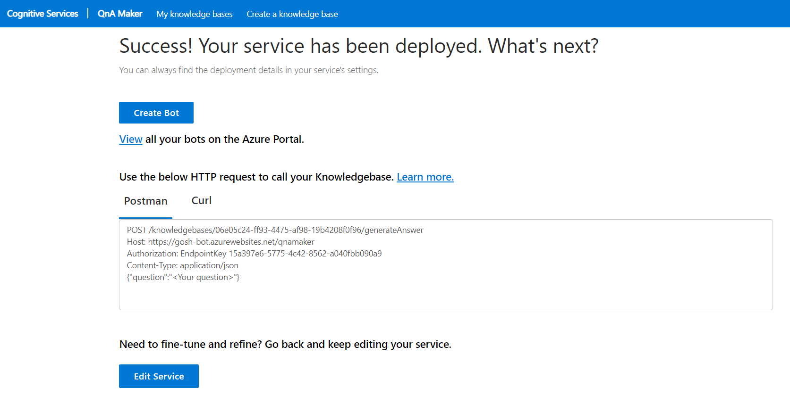

The app only works on Android for now. We recommend using it on devices with Android version under 11.0 for the best user experience. On Android 11.0 the user has to grant 'always' level permission for 'access location' in the setting page.
We recommand using beacons from 'jaalee' and using iBeacon mode. If you are not using 'jaalee' beacons, please make sure the beacons support iBeacon protocol and go to 'bluetooth_beacon_state.dart' then change the identifier in the 'initBeaconScanner' function to your identifier(s). When configuring the Bluetooth beacons, set the Major field as floor id and Minor field as room id.
Since AVINA integrates with a Chatbot service to answer the user's questions, the relevant information about the service must be provided when setting up the application. To create the Azure QnA Service and the Knowledge Base navigate to Azure QnA Maker. Follow the instructions to complete the creation of the chatbot. After the creation of the service, you will be redirected to page like this:
The Knowledge Base Host is the HTTPS URL in the 2nd line without the /qnamaker. (ex. https://gosh-bot.azurewebsites.net)
The Endpoint Key is located on the 3rd line after EndpointKey {EndpointKey}.
The Knowledge Base ID is at the 1st line between the /knowledgebases/{Knowledge Base ID}/generateAnswer.
The AVINA location server is a containerized application, so it can easily be deployed to a cloud service or configured to run on a custom (on-premises) windows, linux, or mac-os machine of your choosing. An on-premise installation is favorable so that the multiple cameras that are installed can send records to the server with minimum latency. A Powershell script is provided to automate configuration.
Deploying AVINA location server to a server of your choosingOnce downloaded, under the /scripts directory you will find a Powershell Core script named ConfigureSightPlusPlusAppSettings.ps1.
Once run (with Powershell Core) the script will ask you to fill in the required settings to configure the .env file, such as the Knowledge Base ID, the Knowledge Base Host and the Endpoint Key that were generated in an earlier step.
The AVINA organisation server is a containerized application, so it can easily be deployed to a cloud service or configured to run on a custom (on-premises) windows, linux, or mac-os machine of your choosing.
Deploying AVINA organisation server to a server of your choosing